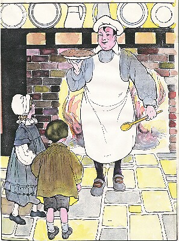

|  |
BAKER The Delicious Program Maker |
|
Pat-a-cake, pat-a-cake, Baker's man! So I do, master, As fast as I can. Pat it, and prick it, And mark it with T, Put it in the oven For Tommy and me. |
|
Yes, we mean to serve. Serve as much saucy source as we can cook-up. So if you're starved for doughy confections, dig right in with a taste of our very own fresh baked Ruby batter. |